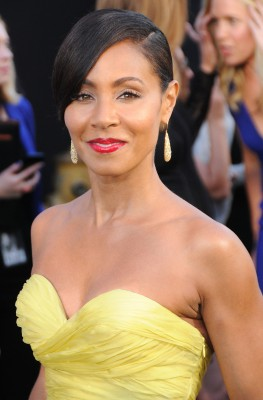
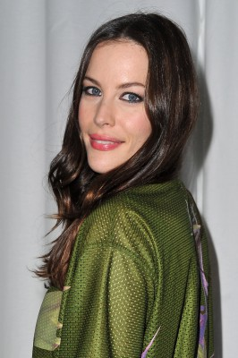
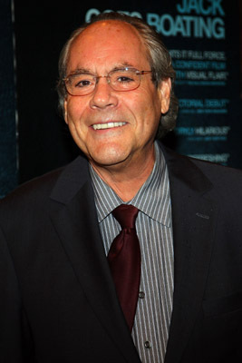
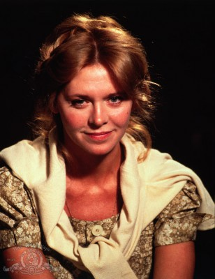
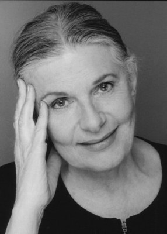
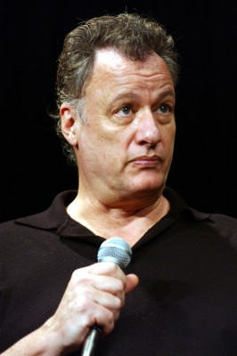
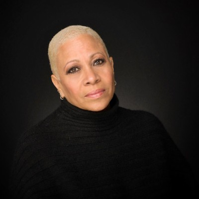
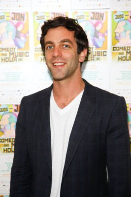
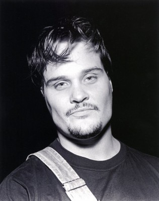
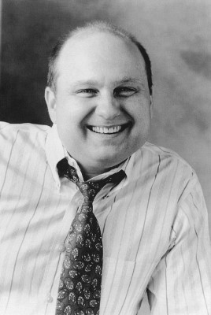

#2680 Die Liebe in mir
Alternativ: Reign Over Me

 IMDB-Wertung: 7.5 / 10
IMDB-Wertung: 7.5 / 10  Metascore: 61
Metascore: 61 
Charlie Fineman (Adam Sandler) hat seine Familie bei den Terroranschlägen vom 11. September verloren und leidet noch immer an den Folgen dieses Traumas. Als er eines Tages in New York zufällig seinem ehemaligen College-Zimmergenossen Alan (Don Cheadle) über den Weg läuft, ist dieser fest entschlossen, ihre alte Freundschaft wieder aufleben zu lassen und Charlie dabei zu helfen, mit seinem großen Verlust fertig zu werden.
Jahr: 2007
Dauer: 124 Minuten
FSK: 6
Land: USA Studio: SPETonspuren: DD5.1 - ,
Untertitel: , Englisch,
Auflösung: 1080p (1920x800) Größe: 8151 MB
Genre: Drama
Regisseur:  Mike Binder
Mike Binder
Drehbuch: Mike Binder
Soundtrack: Rolfe Kent
Darsteller:
 Adam Sandler als Charlie Fineman
Adam Sandler als Charlie Fineman Don Cheadle als Alan Johnson
Don Cheadle als Alan Johnson-  Jada Pinkett Smith als Janeane Johnson
-  Liv Tyler als Angela Oakhurst
 Saffron Burrows als Donna Remar
Saffron Burrows als Donna Remar Donald Sutherland als Judge Raines
Donald Sutherland als Judge Raines-  Robert Klein als Jonathan Timpleman
-  Melinda Dillon als Ginger Timpleman
- Mike Binder als Bryan Sugarman
 Jonathan Banks als Stelter
Jonathan Banks als Stelter-  Rae Allen als Adell Modell
- Paula Newsome als Melanie
-  John de Lancie als Nigel Pennington
- Paul Butler als George Johnson
- Imani Hakim als Jocelyn Johnson
-  Denise Dowse als Psychiatric Hospital Therapist
- Anthony Chisholm als William Johnson
-  B.J. Novak als Mr. Fallon
- Jessica Golden als Night Club Comic
 Ted Raimi als Peter Savarino
Ted Raimi als Peter Savarino- Molly Binder als Becky Fishman
-  Tommy Nohilly als Patty
 Robert Harvey als Dental Partner
Robert Harvey als Dental Partner-  Nick Taylor als Taxi Driver
- M.D. Walton als New York Police Officer #1
- Lela Loren als Dental Hygienist
- Diana Gettinger als Doreen Fineman , uncredited
- Karen Huie als News Reporter , uncredited
- Andre M. Johnson als New York Police Officer , uncredited
 Joey King als Gina Fineman , uncredited
Joey King als Gina Fineman , uncredited- Arick Salmea als Rock Club Guy , uncredited
- Nick Vlassopoulos als Examining Doctor , uncredited
- Camille LaChe Smith als Cherie Johnson
- Harris Peet als Kemp
- Chad Brigockas als New York Police Officer #2
- Elizabeth Andrews als Sugarman's Secretary
- Neal Young als New Dental Patient
- Amber Ingram als Jenny Fineman , uncredited
- Lou Irizarry als Moving Man , uncredited
- Lester G. Reynolds als Psyche Patient , uncredited
Datei: X:\2007(G-M)\Liebe in mir, Die (2007, FSK6, 1920x800).mkv seit 01.12.2015
Festplatte: HD 2007(A-Z)-2008(A-F)
 Es gibt insgesamt 64 Filme in der Gruppe '2007(G-M)'
Es gibt insgesamt 64 Filme in der Gruppe '2007(G-M)'